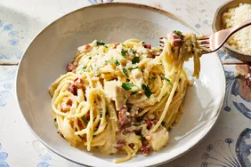

Pasta Carbonara

Carbonara (Italian: [karboˈnaːra]) is a pasta dish made with eggs, pecorino, Parmesan,
cured pork, and black pepper. The dish took its modern form and name in the middle of the 20th century.
Ingredients
- Pancetta
- Spaghetti
- Egg yolks
- Parmesan
- Heavy cream
- Chicken
- Parsley
Cooking Steps
- Cook the pancetta until lightly browned and crisp, then set aside.
- Boil spaghetti, reserve two cups of pasta water, and set aside.
- Whisk the eggs in a bowl, then whisk in 1 ½ cups of the hot pasta water.
- Whisk in the cheese and cream.
- Add the pasta, pancetta, and chicken to the sauce and toss.
- Transfer the mixture to a prepared baking dish and bake until the sauce is thickened.
- Stir and let stand so the sauce can continue to thicken. Add more pasta water if you like.
- Garnish with parsley and Parmesan cheese.
/